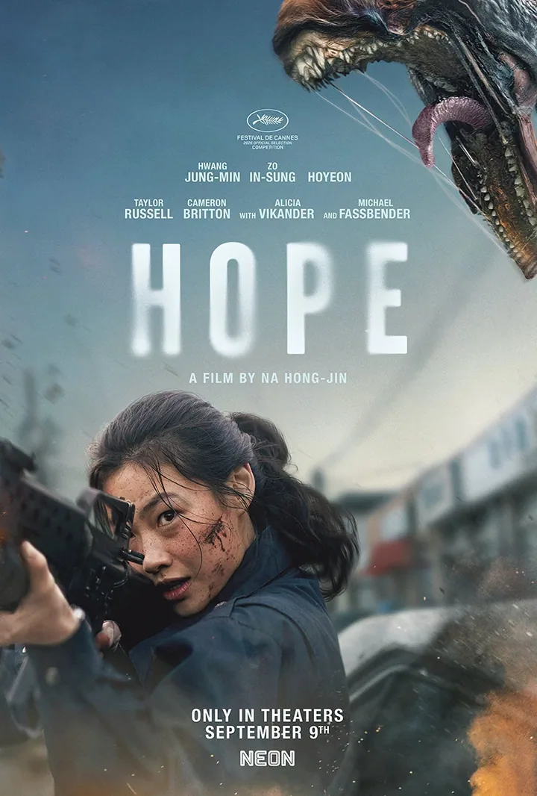
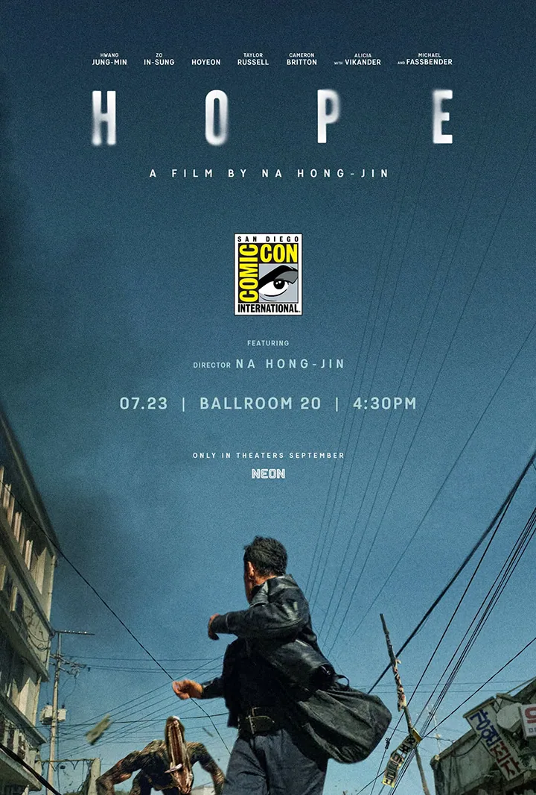
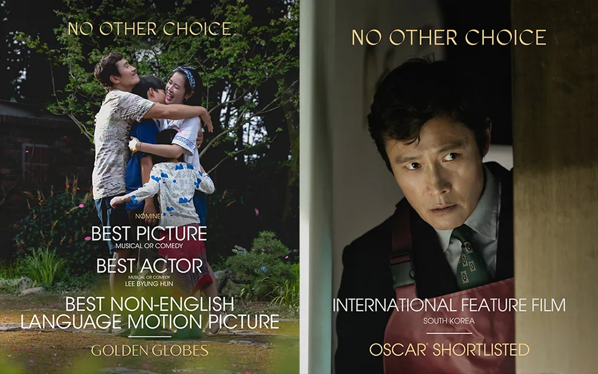
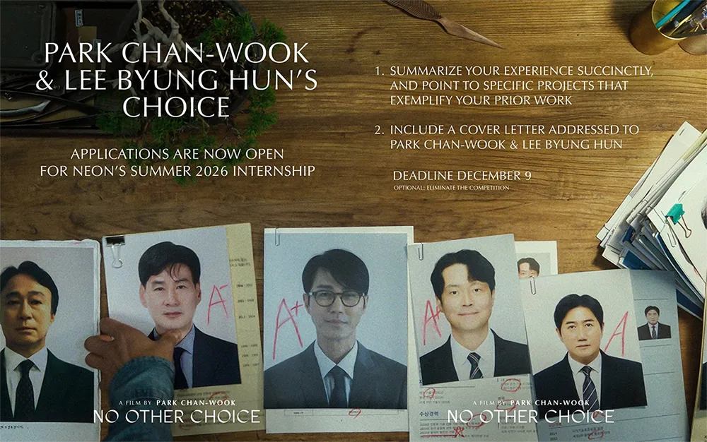
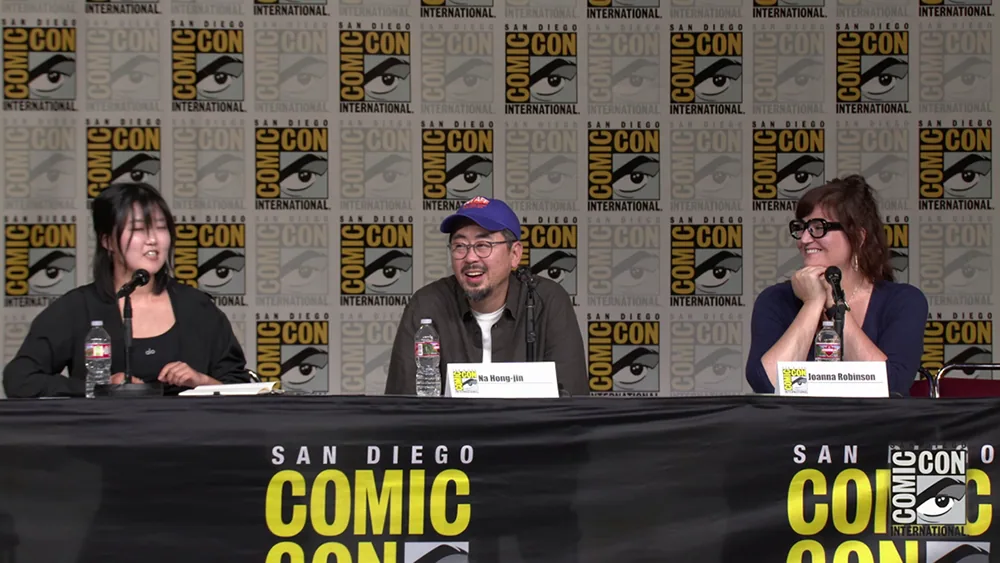

The way we talk about Korean cinema’s global expansion has changed. In the past, Korean films’ overseas success was largely framed as the success of “foreign-language films.” In the U.S. market, being a Korean film was itself a distinctive marketing point, while North American audiences still tended to perceive Korean films as Asian cinema that required subtitles. Today, however, Korean cinema is no longer confined to that category. Since Bong Joon Ho’s Parasite (2019) won both the Palme d’Or at the Cannes Film Festival and Best Picture at the Academy Awards, the global standing of Korean cinema has undergone a fundamental shift. At the center of this transformation is North American independent distributor NEON. NEON does more than simply introduce Korean films to U.S. audiences. It has developed a distinctive distribution model that brings auteur-driven films discovered at Cannes to North American theaters, builds long-term audiences while preserving each film’s individuality and the director’s creative vision, and, when appropriate, carries them all the way through an Oscar campaign.


NEON’s North American poster for Hope (left) and San Diego Comic-Con poster (Courtesy of NEON Facebook)
NEON’s North American poster for Hope (up) and San Diego Comic-Con poster (Courtesy of NEON Facebook)
NEON CEO Tom Quinn’s Discerning Eye for Film
The Palme d’Or at the Cannes Film Festival represents one of the highest honors in the film industry. Distributing its winners in North America is more than simply a business venture; it is a testament to both exceptional judgment and conviction. Beginning with Bong Joon Ho’s Parasite in 2019, distributor NEON has achieved the unprecedented feat of acquiring the North American rights to seven consecutive Palme d’Or winners—excluding 2020, when the festival was scaled back due to COVID-19—with Titane in 2021, Triangle of Sadness in 2022, Anatomy of a Fall in 2023, Anora in 2024, It Was Just an Accident in 2025, and Fjord in 2026. At the center of this record is NEON co-founder and CEO Tom Quinn. “I’ve never gone to Cannes thinking, ‘We have to win the Palme d’Or this time,’” Quinn says with a laugh, adding, “Don’t blame good taste.” Yet NEON’s ability to acquire the North American rights to films before they go on to win the Palme d’Or demonstrates that the company is not simply a distributor chasing trends, but one with a discerning eye for recognizing a film’s essential qualities before others do.
In just nine years since its founding, NEON has achieved remarkable success, earning a total of 57 Oscar nominations. Bong Joon Ho’s Parasite and Sean Baker’s Anora both won Best Picture, while Joachim Trier’s Sentimental Value won Best International Feature Film in 2026, bringing NEON’s total number of Oscar wins to 11.
This year, NEON acquired the North American rights to Na Hong-jin’s Hope and also confirmed that it will distribute Bong Joon Ho’s first animated feature, Ally, scheduled for release next year. NEON’s history of distributing Korean films now encompasses Parasite, the 2023 re-release of Oldboy, and No Other Choice (2025), with Hope and Ally joining the lineup. Quinn’s personal relationship with Korean cinema, however, stretches back much further. Before co-founding NEON, during his time at Magnolia Pictures and Radius-TWC (The Weinstein Company), he spearheaded the North American distribution of The Host (2006), Mother (2009), and Snowpiercer (2013), respectively. These longstanding relationships of trust later laid the foundation for NEON to establish itself as an ideal partner for Korean cinema. In particular, since the phenomenal success of Parasite, NEON has served as a North American gatekeeper for Korean auteur-driven genre films, opening up a “second market” for Korean filmmakers.


NEON’s promotional posters celebrating No Other Choice’s Golden Globe nomination and inclusion on the Oscar shortlist
for Best International Feature Film (above), and Hope’s selection for the Cannes Film Festival (Courtesy of NEON Facebook)
Korean Cinema in North America and NEON’s Selection Criteria
In today’s North American market, Korean cinema is no longer “unknown and exotic content.” Following the historic success of Parasite, Korean films have begun to be recognized by North American audiences as a sustainable “category” in their own right.
For indie distributor NEON, “who made the film” is just as important as “what the film is about.” This approach is a perfect match for Korean cinema, where directors often have distinctive auteur identities. Bong Joon Ho’s blending of genres, Park Chan-wook’s aesthetic direction, and Na Hong-jin’s relentless exploration of human psychology are examples of how a director’s name itself can become a brand. NEON has transformed Korea’s distinctive “director-centered ecosystem” into a powerful asset in the North American market, with audiences heading to theaters based not on a film’s country of origin but on their trust in a director’s name.
Tom Quinn unequivocally states that “Korean films fit NEON’s criteria better than any others.” NEON acquired the North American distribution rights to Parasite at the script stage, before the film was completed, because of its confidence in the film’s originality and quality. Quinn has North American test-screening scores for nearly all of Bong Joon Ho’s films. Bong’s films distributed after The Host scored in the 60% range, considered strong for non-English-language films, while Parasite scored an extraordinary figure in the low 90% range. Combined with a 100% rating on Rotten Tomatoes, the momentum generated by its Palme d’Or win at Cannes, and the timing advantage of an off-season release strategy, these factors created the decisive opportunity for an indie distributor that had long championed Korean cinema to finally emerge at the center of the global film industry.
NEON’s criteria for selecting films are clear. It looks for “auteur-driven films that have something to say, films with cultural weight and artistic excellence.” It targets audiences who are comfortable with violence and non-English-language content. Korean films meet these criteria by combining two qualities that are difficult to reconcile: “genre entertainment” and “auteur-driven artistry.” Just as Quinn has described Bong Joon Ho as “a genre unto himself,” he made it clear from NEON’s earliest days that “our firm principle is to work with Bong Joon Ho no matter where, what, or how he makes his films.”


A special North American screening of No Other Choice hosted by NEON and moderated by Hollywood actor Bill Hader (above),
and NEON’s summer 2026 internship recruitment announcement featuring No Other Choice (Courtesy of NEON Facebook)
What Sets NEON Apart from Well Go USA and MUBI
U.S. distributors take different approaches to Korean films. Well Go USA Entertainment has a clear strength in distributing genre and action films, as well as Asian cinema, including Korean films. It excels at presenting films with clear commercial appeal, such as Yeon Sang-ho’s Colony, which opens in North America on August 28, on the big screen and delivering the kind of immersive experience only theaters can offer. In particular, ahead of the release of Colony, Well Go USA re-released a 4K remastered version of Train to Busan (2016), the landmark film that introduced Yeon Sang-ho to global audiences, in approximately 500 theaters across North America two weeks earlier. The strategy is designed to create more opportunities for audiences to engage with the film.
MUBI, by contrast, has a strong identity rooted in curation, arthouse cinema, and streaming. It excels at introducing sophisticated auteur-driven films such as Park Chan-wook’s Decision to Leave (2022) to a community with clearly defined tastes. Among local filmmakers and audiences, MUBI is widely regarded as a “filter for taste.” The reasons these two distributors compete for the rights to Korean films are clear. Well Go USA seeks the steady demand of genre audiences, while MUBI aims to differentiate itself through curated premium content.
NEON occupies a different position from both. It organically combines Cannes premieres with theatrical and platform releases, then activates its genre-marketing machine when needed. Park Chan-wook’s No Other Choice began its theatrical run in just 13 theaters before expanding to 695 screens. It ranked ninth at the box office on the day of its wide expansion and ultimately surpassed USD 10 million in box office revenue, setting a new North American box office record for Park. As demonstrated by its witty billboard campaign following the film’s exclusion from the Oscar nominations, NEON actively turns awards-season narratives into marketing assets. While NEON applies a standard arthouse distribution formula to other foreign-language films, for Korean cinema it deploys a “genre-and-prestige hybrid” playbook. Its strategy expands the target audience to include younger genre fans while carefully building and broadening word of mouth in stages.
Hope, Ally, and Oscar Ambitions
The reasons NEON chose Hope and Ally from among the many highly anticipated films are clear. First, Ally marks NEON’s sixth collaboration with Bong Joon Ho and represents an expansion into animation and family films. Featuring an original world centered on a baby squid living in the depths of the South Pacific and a star-studded voice cast including Bradley Cooper and Ayo Edebiri, it is a family adventure that combines the imagination of Korean director Bong Joon Ho with a global production system, making it a film conceived for worldwide audiences from the outset. Set for distribution by NEON, Ally is scheduled for a wide North American release in 2027.


Director Na Hong-jin at this year’s San Diego Comic-Con (above), and directors Bong Joon Ho and Na Hong-jin
at a special Hope audience Q&A in Korea (Courtesy of Plus M Entertainment)
Hope is Na Hong-jin’s first film in 10 years and his first to compete at the Cannes Film Festival. NEON began pursuing the distribution rights as early as November 2025, before seeing the completed film, and secured distribution rights for North America, the U.K., and Australia ahead of Cannes. The scale of the production, the casting of top Korean stars alongside Michael Fassbender and Alicia Vikander, and its premise as a sci-fi creature thriller align perfectly with NEON’s target audience—viewers who are “comfortable with violence and foreign-language content.” For Hope, which is set to open in North America on September 9, NEON has chosen a strategic release window just ahead of the Toronto International Film Festival. It is closely targeting genre fans through initiatives such as previewing footage at CinemaCon in Las Vegas and building fandom at San Diego Comic-Con.
NEON has opted for a strategy of previewing Na Hong-jin’s Hope in premium screens across the United States. On September 7, the film will hold special 6:30 p.m. screenings at 175 premium theaters for one night only, aiming to generate word of mouth ahead of its wide release on September 9. The screenings will take place in New York, Los Angeles, Chicago, San Francisco, Dallas, and other cities in six large-format and specialty formats: Dolby Cinema, 4DX, ScreenX, Barco HDR, D-BOX, and Dolby Atmos. NEON employed the same strategy last year with the horror film The Monkey, building buzz through premium-format advance screenings and ultimately helping the film reach USD 40 million at the box office. If the film follows a rollout that builds momentum through a limited release before expanding wide, its Oscar campaign could become far more versatile. This is because the campaign could extend beyond the highly competitive Best International Feature Film category into other major categories. Accordingly, NEON is expected to coordinate a strategic release that capitalizes on the buzz generated at Cannes, expanded screenings for awards voters, and distinctive outdoor and viral marketing campaigns.
For NEON, Korean cinema is not simply a source of “outstanding foreign films,” but a unique asset capable of capturing arthouse and genre audiences while achieving both awards recognition and box office success. In a theatrical landscape that has moved beyond the “one-inch barrier” of subtitles, Hope and Ally will be the next test of NEON’s discerning eye.